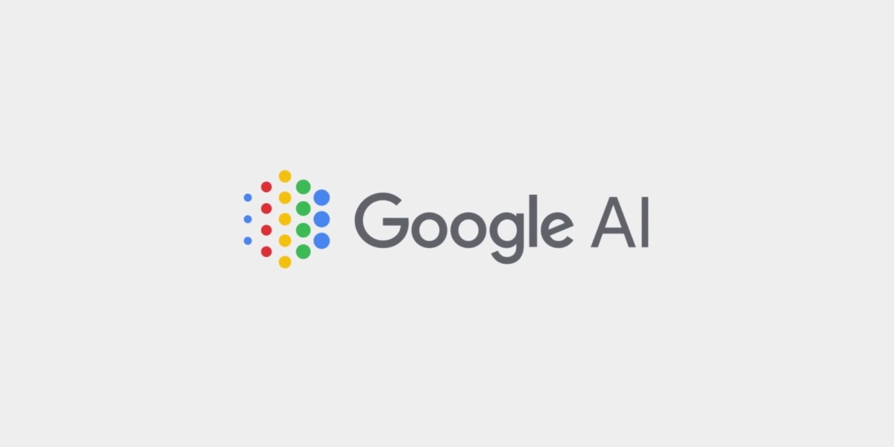

C:\MAR_02_2018.txt
Yes, Google’s Phone-Calling AI Is Cool. But Why Does It Exist?
-----------------------------------------------------------------------------
by // Victor Tangermann
C:\random_txt_files\article\top\news.api
“Hello? Hi, I’m, uh, calling to make a reservation. I’m Google’s automated booking service, so I’ll record the call.” You hang up immediately. This, again? That’s the fourteenth one today.
Google announced its futuristic feature called Duplex at its I/O 2018 developer’s conference back in May. Duplex is essentially a Google Assistant service that calls a business, such as a hair salon or restaurant, to make a reservation on your behalf.
The tech world went gaga for it. Aficionados said the new tool would usher in “a new era of AI” with its uncanny ability to trick an unsuspecting person into thinking it was a human on the other end.
But there were some serious ethical concerns, too. Is the person who’s being called ever made aware of the fact they are talking to an AI? Is the AI taking advantage of the person it’s calling? And does it even work?
Roughly two months later, Google has some answers. It’s revealed a sleek new demo to show off to the world, “uh’s” and “uhms” included. A Recode writer even received a call from the AI.
At first glance, Google seems to have hammered out some of the issues with the May demo. One clear difference: Google’s Assistant announced itself as being an “automated booking service.” That should appease those ethics-minded naysayers. And, yes, it does appear to actually work.
Google also announced that Duplex will be rolling out to a limited number of businesses that Google is already partnered with, and a number of “trusted tester users,” though details about which businesses these are specifically are still scant.
But there’s another question Google has to answer before Duplex can become commonplace: what problem does it really solve? Are people too busy with their lives to spend just two minutes on the phone to book an appointment? In an age when many businesses are opting for online solutions, isn’t a phone calling robot a bit unnecessary? Perhaps we’ve been blinded by the marvel of Google’s technological achievement not to question why it’s pouring resources into this.
And if it does find a convincing enough reason to exist, will Duplex ever stand a chance? There are plenty of examples of technologies that were around for a while before they were actually accepted by the general public. Take Amazon’s Echo devices — they were released back in November 2014 to a lukewarm reception until 2017, when it became widespread, selling 22 million devices. Some technologies, like smart glasses, never even found any success at all. The Google Glass project never won over people’s hearts, and Snapchat’s Goggles are still desperately trying to convince the public of their purpose (Intel never even tried to release the smart glasses it had developed).
But Google is still going full steam ahead with project Duplex. It’s trying very hard to make its AI sound indistinguishable from a normal human being. When the voice sounded too robotic, as Scott Huffman, VP of engineering for Google Assistant, tells The Verge, “it didn’t work. [….] we got a lot of hangups, we got a lot of incompletion of the task. People didn’t deal well with how unnatural it sounded.”

The solution? Adding “speech disfluencies.” Brief pauses filled with “uh’s” and “hmms” improved Google’s results significantly by making the AI sound more chipper and friendlier.
So what’s Google’s end game? It seems to have conflicting missions: to regain the trust of those who don’t want to be deceived into talking to an AI without knowing it, but also putting a lot of effort into making that robotic voice as indistinguishable as possible from a human one. Which mission takes precedence?
Despite our awe for Duplex, Google might be surprised at how difficult it might be to convince people to use it (that is, if it’s ever released to the public). For most people, talking to a bot on the phone, no matter how lifelike it is, is an unnatural-feeling experience that requires you to enunciate differently, to speak unnaturally — at least, at current technological standards.
So it’s unsurprising that somebody working at a hair salon or restaurant would simply hang up on a robot, the way they would hang up on an automated telemarketing call. Ain’t nobody got time for that.
Even if Google gets close enough to replicating a human voice to get us out of the uncanny valley, people may be slow to adopt the technology. Even the internet was around since the late 1980s, and only found mainstream adoption by the mid 90s. Email has been around for over half a century, yet its use is still widespread today.
If Google has learned anything from Google Glass, it knows that trying to force this kind of thing onto unsuspecting people will never work. But at least you’ll be able to hang up the phone.
C:\FBI\tracking\social.exe
[[SHARE]]
------------
------------
[[ popular articles ]]---------]

tech & us
google glass: never left

[AI]
google phone AI

tomorrow's tech
Boston Dynamic's Atlas

tech & us
Uncanny Valley

today's tech
7 ways VR will change the world